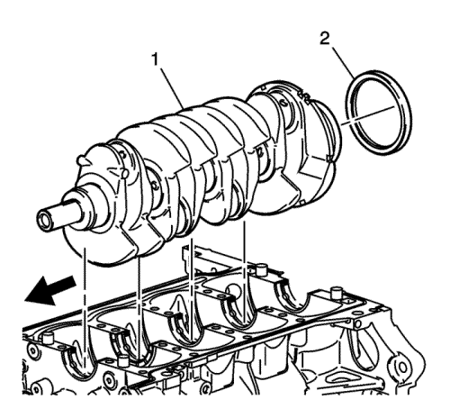
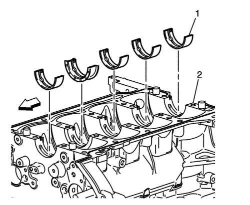
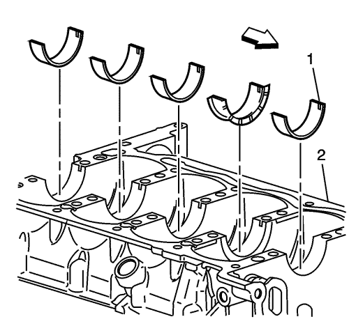

- Desmontar el cigüeñal (1) de su ubicación en el bloque motor.
- Retire la junta de aceite del retén trasero del cigüeñal (2) del bloque.

- Retirar los casquillos de bancada (1) de su ubicación en el bloque motor (2).

- Retirar los casquillos (1) de su ubicación en la rampa de bancada (2).
- Limpiar el aceite, restos de suciedad y carbonilla.
- Inspeccionar los orificios de las galerías de lubricación por si estuvieran obstruidos.
- Examinar las roscas.
- Examinar los muñones de los cojinetes y superficies de ataque por si se observasen los indicios siguientes:
| • | Sobrecalentamiento (decoloración) |
- Examinar los casquillos de cojinete que correspondan por si presentasen restos de materias extrañas empotrados. Si se observan materias extrañas, averiguar la causa y repararla.
Nota: Sustituir el cigüeñal en caso de presentar grietas, ralladuras profundas o puntos de sobrecalentamiento. Cualquier aspereza ligera podrá eliminarse utilizando una tela esmeril fina empapada en aceite de motor limpio. Las rebabas podrán eliminarse con una piedra de esmerilar.
- Medir los muñones del cigüeñal. Utilizar un micrómetro o reloj comparador para medir la conicidad y alabeo. Anotar el resultado de la última selección de cojinetes de bancada efectuada. De no estar dentro de las tolerancias, deberá sustituirse el cigüeñal.
Anotar las ubicaciones de los puntos elevados de los cojinetes de bancada. De no encontrarse alineados, será indicativo de que el cigüeñal está arqueado y deberá sustituirse.